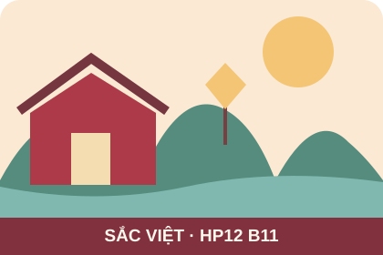

SẢN PHẨM BÀI HỌC
Published Blog Improved v1.1
Kiểm thử phiên bản công khai, xử lý lỗi ưu tiên và cập nhật phiên bản đã phát hành.
Kiểm thử hồi quy phiên bản 1.1
Thực hiện trên URL GitHub Pages thật sau khi B10 đã xuất bản.
Nếu một ca kiểm thử thất bại, sửa trong mã nguồn, commit, cập nhật bản công khai và thử lại. Không đánh dấu PASS chỉ vì localhost chạy tốt.
Dữ liệu minh họa, không sử dụng thông tin cá nhân. Quiz thực hiện ở nhà.